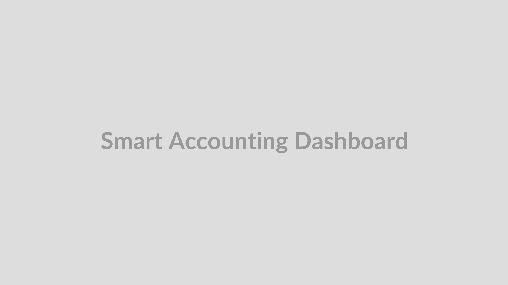

A beautiful, modern, and comprehensive accounting overview for your Odoo environment.

Our OWL-powered dashboard gives you real-time metrics pulled straight from account.move.line without degrading performance.
account.move.line